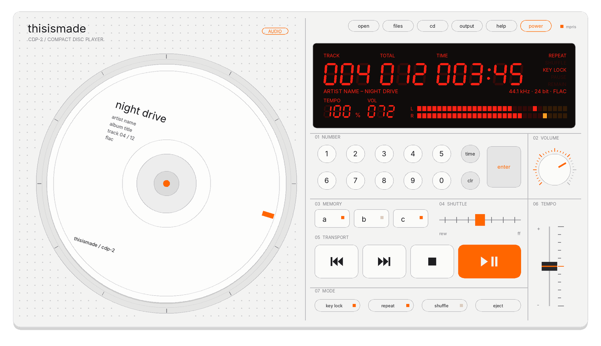

Ein Musikplayer, der sich wie ein CD-Deck bedient: drehende Disc, rotes Display, Tempo mit Key Lock, Memory-Cues und Shuttle. Für Windows 11, macOS und Ubuntu.

Die Disc dreht sich mit, solange Musik läuft, und lässt sich mit der Maus scratchen. Das Display zeigt Titel, Spielzeit, Auflösung und Pegel.
Alles wird bedient wie am echten Deck: Titelnummer tippen und ENTER, Cue-Punkte auf A, B und C, Tempo am Fader.
Alle Dateien kommen direkt aus dem GitHub-Release von thisismade cdp-2.
Die Installer sind nicht kostenpflichtig signiert. Windows zeigt beim ersten Start „Der Computer wurde durch Windows geschützt“ → Weitere Informationen → Trotzdem ausführen; auf dem Mac in den Systemeinstellungen unter Datenschutz & Sicherheit auf „Dennoch öffnen“ klicken. Ältere Version: thisismade CDP-1.
Spielt Ordner, Einzeldateien, Playlists und Audio-CDs. Formate: MP3, FLAC, WAV, AIFF, AAC/M4A, ALAC und mehr.
Alle beliebten Repositories von thisismade, mit Quellcode und Downloads.